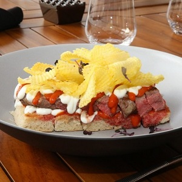

قائمة البقالة
- عجينة العشر دقائق : مقدار
- كيري : 14 حبة (مقطعة أرباع)
- فستق حلبي : نصف كوب
- الزيت النباتي : ملعقة كبيرة (لدهن صينية الفرن)
- صفار البيض : 1 حبة (مخفوق / لدهن الوجه)
- قطر : حسب الرغبة (للتقديم)
- فستق حلبي : حسب الرغبة (للتزيين)
طريقة التحضير
خلية النحل بالكيري والفستق الحلبي
افردي عجينة العشر دقائق على السطح المراد العمل عليه والمرشوش بالقليل من الطحين باستخدام الشوبك (المرق).
قطعي العجينة لدوائر متساوية الحجم.
احشي الدوائر بقطعة من جبن الكيري وحبات من الفستق الحلبي.
أغلقي العجينة على الحشوة وشكليها على شكل كرات صغيرة.
ادهني صينية الفرن بالقليل من الزيت، وضعي حبات العجينة المحشوة فيها.
ادهني الوجه بصفار البيض.
أدخلي الصينية للفرن على درجة حرارة 180 مدة 25 دقيقة.
للتقديم: صبي القطر والفستق الحلبي بحسب الرغبة.
قائمة البقالة
- مقادير العجينة :
سميد ناعم : 2 كوب
سكر البودرة : 3 ملاعق صغيرة
الفانيليا : ملعقة صغيرة
دقة معمول : نصف ملعقة صغيرة
جبن كريمي كيري : 6 حبات
الزبدة : 100 غراماً
الزيت النباتي : ملعقة كبيرة
ماء الزهر : ملعقة صغيرة
ماء الورد : ملعقة صغيرة
- مقادير الحشوة :
التمر : حسب الحاجة (منزوع النواة)
زيت الزيتون : ملعقة كبيرة
القرفة : رشّة (مطحونة)
حبهان : رشّة (مطحون)
ماء الورد : ملعقة صغيرة
طريقة التحضير
طريقة التحضير
معمول الكيري
لتحضير العجينة: في وعاء، ضعي السميد والسكر البودرة والفانيليا وبهارات المعمول وجبن الكريم والزبدة والزيت النباتي وماء الزهر وماء الورد.
افركي المكونات مع بعضها ثمّ اجمعيها بيديك (لا تستعملي طريقة العجن للمحافظة على هشاشة المعمول).
أدخلي العجينة إلى الثلاجة لـ15 دقيقة حتى تجمد وتصبح سهلة التشكيل.
لتحضير الحشوة: في وعاء ضعي التمر مع زيت الزيتون والقرفة والحبهان وماء الورد.
اعجني المكونات جيداً للحصول على خليط متجانس.
خذي جزء من العجينة وافرديها براحة يدك.
ضعي القليل من الحشوة فيها وشكّليها بواسطة قالب المعمول.
ضعي المعمول على صينية وأدخليها إلى فرن محمّى مسبقاً حتى تنضج وتصبح ذهبيّة اللون.
 قائمة البقالة
قائمة البقالة
1 صفيحة من حليب نستله المكثف المحلى
2 قطع من البيض
5 ملاعق طعام من الزيت النباتي
1 ملعقة صغيرة من خلاصة الفانيلا
2 ½ أكواب من الدقيق العادي
2 ملعقة صغيرة من القرفة المطحونة
1 ملعقة صغيرة من البيكينغ باودر
½ ملعقة صغيرة من الملح
2 أكواب من الجزر
1 صفيحة من شرائح الأناناس المعلّبة والمصفّاة
½ كوب من الجوز
50 غ من جوز الهند المجفف
1 ملعقة صغيرة من بيكربونات الصودا
cream cheese frosting
200 غ من جبنة الكريما
5 ملاعق طعام من الزبدة القليلة الملح
2 أكواب من السكر البودرة
4 غ من قشر الحامض
1 ملعقة صغيرة من خلاصة الفانيلا
طريقة التحضير
كيك الجزر الإستوائي وصفات
تخلط المكونات الجافة في وعاء كبير، الدقيق، الباكنغ باودر، صودا الخبز ، الملح والقرفة. تخلط حتى تمتزج جيداً.
في وعاء منفصل يخلط حليب نستله المكثف المحلى، البيض، الفانيلا والزيت حتى يمتزجوا جيداً.تضاف المكونات الجافة. يضاف الجزر، قطع الأناناس من Dole جوز الهند والجوز وتقلّب بواسطة الملعقة الكاشطة حتى يمتزجوا.
تخبز بدرجة حرارة 180مئوية لمدة 30-40دقيقة في قالب كيك مفرغ من المنتصف أو حتى يدخل عود خشبي في المنتصف ويخرج نظيفاً. يبرد بدرجة حرارة الغرفة.
في خلاط الأطعمة. تمزج الجبنة السائلة والزبدة حتى تمتزج ويضاف السكر تدريجياً، تضاف الفانيلا وقشر الليمون وتخفق بسرعة متوسطة لمدة 4-5 دقائق.
يصب خليط التزيين بملعقة ممتلئة أعلى الكيك ويترك ليسيل على الأطراف قليلاً.
قائمة البقالة
1¾ كوب أو 240 غ من الدقيق العادي
2/3 كوب أو 130 غ من الزبدة غير المملحة
2 ملاعق طعام من السكر البودرة
للحشوة:
100 غ من الشوكولاتة الداكنة٬ المذوّبة
1 ملعقة طعام من الزبدة غير المملحة٬ الطرية
1 علبة أو 397 غ من حليب نستله المكثف المحلى
1 كوب أو 100 غ من اللوز المطحون
2 من البيض
2 أكواب أو 300 غ من الكرز٬ منزوع النواة ومقطّع إلى أنصاف
طريقة التحضير
تارت الكرز والشوكولاتة وصفات
يُمزج الدقيق مع الزبدة والسكر البودرة في وعاء وتُمزج المكوّنات جيّداً ببعضها بواسطة الأصابع إلى أن يتفتّت المزيج. تُرص العجينة في قاعدة وجوانب قالبٍ للتورتة قياس 26 سم وبقاعدةٍ مرنةٍ.
يُخبز القالب في فرنٍ محمّى على حرارة 200 درجة مئويّة لمدّة 10 دقيقة ثم يُستخرج من الفرن.
تُخفق الشوكولاتة المذوّبة مع الزبدة وحليب نستله المكثّف المحلّى ثم يُضاف اللوز المطحون والبيض وتُُحرّك المكوّنات جيّداً. تُضاف أنصاف حبّات الكرز وتُمزج.
يُسكب المزيج في قالب التورتة المجهّز ويُخبز في فرنٍ محمّى على حرارة 185 درجة مئويّة لمدّة 30 إلى 35 دقيقة أو إلى أن يصبح شديداً في الوسط.
تُبرّد التورتة قبل التقديم.
قائمة البقالة
1¼ كوب أو 175 غ من الدقيق العادي
½ كوب أو 100 غ من الزبدة غير المملحة٬ المقطعة
2 ملاعق طعام من السكر البودرة
1 من صفار البيض
½ كوب أو 125 غ من مربّى المشمش
¾ كوب أو 150 غ من جبنة الكريما
½ كوب أو 100 غ من السكر الناعم
1 كوب أو 160 غ من البندق٬ المحمّص والمقطّع
1 علبة أو 170 غ من قشطة نستله
2 من البيض
1 ملعقة طعام من خلاصة الفانيلا
طريقة التحضير
الباستا فلورا
اخلطي الطحين والبيكنج باودر في وعاء.
اخفقي الزبدة بواسطة الخفاق الكهربائي في وعاء كبير، وأضيفي إليها السكر مع الاستمرار بالخفق.
أضيفي البيض والفانيليا، ثم خليط الطحين والبيكنج باودر تدريجياً حتى تحصلي على عجينة متجانسة الليونة.
قسّمي العجينة إلى ثلثين وثلث.
افردي الثلثين في قعر صينية مغلفة بورق الشمع، وادهني سطحها بالمربى.
استخدمي الثلث الأخير من العجينة في تزيين الصينية، وذلك بعمل خطوط طولية وعرضية من العجين لتحصلي على شكل مربعات.
اخبزي الصينية في فرن محمى على حرارة 180 درجة مئوية لمدة 30 دقيقة.
قائمة البقالة
- لتحضير العجينة :
دقيق : 2 كوب (دقيق الفرخة)
سميد ناعم : نصف كوب
الدقيق الأبيض : 100 غراماً (متعدد الاستعمالات)
حليب بودرة : 4 ملاعق كبيرة
سكر : 5 ملاعق كبيرة
سمن : 230 غرام (مذوّب فاتر)
بيكنج بودر : نصف ملعقة صغيرة
ماء الزهر : ملعقة كبيرة
ماء فاتر : 3 ملاعق كبيرة (أو أكثر بحسب الحاجة)
المحلب : ملعقة كبيرة
- لتحضير الحشوة :
القشطة : 400 غراماً (جاهزة أي قريشة)
القشطة : 5 ملاعق كبيرة (كريمية)
ماء الزهر : ملعقة كبيرة
مستكة : نصف ملعقة صغيرة (مطحونة)
سكر : ملعقة كبيرة
طريقة التحضير
معمول بالقشطة
في العجانة الكهربائية، ضعي دقيق الفرخة والسميد والدقيق والسكر والحليب البودرة والمحلب والبايكنغ باودر.
اخلطي المكونات الجافة.
أضيفي السمن واخلطي.
ضعي العجينة في وعاء واتركيها ترتاح ليلة كاملة بدرجة حرارة الغرفة.
أعيدي العجينة إلى العجانة وأضيفي ماء الزهر واخلطي.
أضيفي الماء تدريجياً مع العجن باستمرار للحصول على عجينة متماسكة.
غطّي العجينة واتركيها ترتاح لمدّة 4 ساعات بدرجة حرارة الغرفة.
لتحضير الحشوة: في وعاء، ضعي القشطة الجاهزة وقشطة الكريمية وماء الزهر والمستكة والسكر.
اخلطي المكونات جيداً بيديك حتى تتجانس وتصبح كالعجينة.
كوّري العجينة واصنعي فجوة في وسطها.
ضعي مقدار ملعقة صغيرة من الحشوة وأغلقي العجينة.
ضعي العجينة في قالب معمول ومدّيها ثمّ اطرقيها على سطح صلب لإخراجها.
حمّي الفرن على حرارة 180 درجة مئوية.
أدخلي الصينية إلى الفرن لـ12 دقيقة حتى تنضج.
ثمّ شغلّي الفرن من فوق لـ3 دقائق.
 |
 |
 |
 |
 |
 |